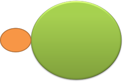
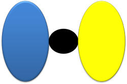
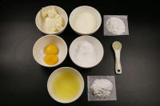

Prepositions and prepositional phrases

There is
a simpler introduction to prepositions on the initial plus
training pages (new tab). You may like to review that before going on.
If you returning for another look at this guide or are looking for
something in particular, here's an index of its contents.
Clicking on -top- at the end of each section will
bring you back to this menu.
Otherwise, take it as it comes.
 |
Definitions |
Prepositions belong to a closed class of words which means
that we do not readily add new ones although some which were quite
common, such as betwixt, afore, athwart etc., fall out of
fashion and are rarely used.
It is, therefore, in theory at least, possible to construct an
exhaustive list of all the prepositions in English. In theory
that is because
- Some prepositions are very rare or archaic and often virtually unknown to the modern user of English such as ahind, alongst, afore etc. which will occur rarely in a restricted set of literary texts.
- Definitions vary slightly and some will include, for example, prefixes such as post-, anti- and pre- which sometimes stand alone as prepositions.
- Some are poetic only, such as ere, o'er, unto, midst etc.
- Dialects of English contain prepositions such as
afront, allow, ayond etc. which are rare or unknown in
many settings.
If you would like a list of prepositions over 200 prepositions in English, follow the link to the PDF document at the end or click here.
For most teaching purposes at lower levels at least, this list is probably enough:
| about above across ago at before below |
beside by for from in into next to |
of off on onto out of over past |
since through till to towards under until |
A prepositional phrase, which is mostly the concern of this
guide consists of the preposition itself (the head) followed by
its complement.
Therefore, a prepositional phrase has two parts:
the preposition and the preposition
complement. Overwhelmingly, in English, the
prepositional head of the phrase precedes the complement (or object
as we shall see) but that is not invariably the case.
 |
Task: There are five kinds of prepositional complement. Can you identify them in the following examples? The preposition is in black and the complement is in this colour. Click here for the answers and some other examples when you have tried this. |
- He drives past my house most mornings
- From what you have told me, it is very strange.
- Before opening the letter, he took a deep breath.
- From now to eternity.
- He moved over to under the light.
- a noun phrase complement:
at the station, under my feet, across the Irish Sea, beyond my comprehension, according to him
etc.
When a pronoun is the complement, it is in the object (accusative) case:
Please keep this between you and me
Don't talk to her - a wh-clause
complement:
by what I've heard, from what I assume, about where to go next week
etc.
Sometimes a wh-clause is severely abbreviated (a phenomenon called sluicing) and the wh-word or phrase is left alone as the complement of the preposition as in:
She telephoned but I don't know where from
They arrived but I'm not sure where at
They were afraid of something but didn't say what
In some cases, the preposition itself may be ellipted, too, as in:
John was arguing with someone but I don't know who - an -ing clause
complement:
instead of opening the box, by breaking the window, despite losing his keys
etc.
Arguably, this is sometimes a case simply of a verb acting as a noun and a subset of the examples in point 1. - an adverb or adverb phrase complement:
from here to there, until very recently
etc.
Only adverbs of place and time can function as complements in prepositional phrases and even then there are clear restrictions.
The guide to adverbs, linked in the list of related guides at the end, has more on how certain adverbs co-occur restrictively with certain prepositions. - another prepositional phrase complement:
out from under the car, until after my graduation
etc.
We cannot have a that-clause
or a to-infinitive clause as the complement of a preposition so we
can't say, e.g.
*I understand from that he told me
*He came in by to break open the window
etc.
Other languages do things differently and that accounts for a good
deal of error. Simply telling learners this little fact can be
most helpful.
In all of the above, the examples contain the standard word
ordering of English: preposition followed by the noun phrase.
That is, of course, why the words are labelled
prepositions.
English has, in fact, some postpositions which
perform the same linking function but follow the noun phrase.
See below for examples of their use.
Simple and complex prepositions |
Most prepositions are single words like of, in, at, by,
for, with etc. but some, called complex prepositions,
consist of phrases in themselves and they include except
for, with the exception of, in spite of, with reference to,
apart from etc.
A little care is needed to analyse these as complex prepositions
which are followed by a complement rather than conflating part
of the preposition with the complement.
These are not prepositional phrases (although they are phrases)
when they stand alone because the complement is missing.
They are best considered as multi-word prepositions in
themselves.
 |
A slightly different way to analyse prepositional phrases |
Some functional approaches to grammar analysis take a slightly different view of the prepositional phrase.
The analysis is that most phrases can be described as an expanded
version of the Head of the phrase.
For example, in this sentence:
The cautious old man spoke slightly hesitantly at the
meeting
the noun phrase, The cautious old man, can be analysed as
the Head (man) being expanded by the pre-modifying
adjectives and the determiner.
In the same way, the verb + adverb phrase, spoke slightly hesitantly,
can be analysed as the Head (the verb spoke) expanded by
the post-modifying adverbs. Strictly, a verb phrase contains
only verb forms, of course, but this matters little here.
However, the prepositional phrase cannot be analysed in exactly the
same way because the phrase at the meeting is not a simple
expansion of the Head (at) but may be better considered as
the preposition plus its object (the meeting).
Calling the complement the object also makes sense in terms of case
because, as we saw above, any pronoun in the complement is in the
object, accusative, case which is why we say:
He walked towards me
not
*He walked towards I.
In this way, prepositional phrases function more like small clauses
than phrases per se.
We do not follow that analysis here, staying with the word complement to refer to the object of the preposition but it is worth explaining, albeit briefly.
An argument against calling the parts which follow a preposition in a phrase objects rather than complements is that they need not always be nominal items although they act that way in terms of grammatical function. A number of other word and phrase-class members can act as the complement of prepositions, as we saw above and they include adverbs, non-finite verb forms, wh-clauses, adjectives (when nominalised), pronouns and other prepositional phrases.
 |
Case |
Case refers to the relationship between elements of a clause or
sentence. For example, we saw above that we say:
between you and me
not
*between you and I
because in English all prepositions are followed by the object case
and, for the first-person pronoun in English, that is the pronoun
me.
Similarly, we can have a sentence such as:
She gave me them
in which we have another use of me but this time it is
actually a dative case pronoun because it represents an indirect
object. The word them is the direct object case of
the pronoun they. English does not change the form of
the pronoun me to show whether it is the direct or the
indirect object. That can be done, however, with a
prepositional phrase so we can equally have:
She gave them to me
with the indirect object shifted to the end and preceded by a
preposition.
In other languages, German for example, the pronoun is marked
differently for the object, accusative, case and the dative,
indirect object, case. So for example, in German:
She saw me
translates as
Sie sah mich
and
She gave me it
as
Sie gab es mir
with two pronouns (mich and mir) signalling
the cases (accusative and dative, respectively).
In other languages, life becomes considerably more complicated.
English is not a highly inflected language so does not exhibit
many changes to words to show case. English overwhelmingly
indicates the relationships in syntax by prepositional phrases
rather than changes to the nouns, determiners and adjectives etc.
So, for example:
I hit it with a rock
we have what in some languages would be called an instrumental case
but English makes no change to the rock to indicate this,
preferring to use the preposition with to signal that
the rock was the instrument I used.
We can also have what is called an ablative case as in, e.g.:
She walked away from the station
and English signals this with the complex preposition away from
but other languages (Finnish, Gujurati, Basque and many more,
including Turkish) make changes to the noun to indicate the
relationship between she and the station.
There are many cases which can be signalled in a variety of
languages and for a much fuller run down of the possibilities, see
the guide to case, linked below.
It is enough here to understand that learners whose first languages
have well-developed case structures will, accordingly, have fewer
prepositional structures because the relationships are signalled
via inflexions rather than through the use of function words.
Such languages include:
Czech, Estonian, Finnish, Greek, Hungarian, Polish, Russian,
Serbo-Croat, Slovak, Tamil, Turkish and Ukrainian.
Speakers of those languages will encounter quite serious problems
understanding and using prepositional phrases in English because,
failing a clear case structure, the language has developed a much
more complex system of prepositional structures to signal case
relationships.
Many other languages do not signal case through inflexion and have
ways akin to English to show relationships (or do it via
affixation, often suffixation). These include:
The Chinese languages, Romance languages, Swedish, Dutch,
South-East Asian languages and many African languages.
Despite having parallel systems, naturally, exactly how the
relationships are signalled will not be parallel and difficulties of
choice of the appropriate preposition remain.
We saw above that English has two ways to signal the dative or
indirect object: by word order as in:
She read the children a story
in which the indirect object precedes the direct object, and with a
prepositional phrase as in:
She read a story to the
children
where we use the preposition to to show the indirect
object.
And the language also has two ways of signally the genitive: by
inflexion as in:
It's the company's policy
where we use the 's inflexion, and with a prepositional
phrase as in:
It's the policy of the
company.
using the preposition of.
Most languages settle on one way or another and it is confusing for
learners to have to make such choices when they use English.
 |
Blurring at the edges: borderline cases of word class |
Some words can only function as prepositions and present no
serious comprehension or use issues. They include:
against, among, at, bar, barring, beside, despite, during,
except, following, from, including, into, like, minus, of, per,
plus, to, toward(s), upon, via and with.
Multiple word-class membership |
Other words with dual or triple class membership can be problematic.
The first group includes most prepositions not in the list above
because simply removing the complement results in an adverbial use.
It may be argued that the ellipsis of the complement leaves the
prepositional nature of the word intact. Compare, for example:
They met outside the pub
which is prepositional and
We can't smoke inside
which is adverbial, with
He was still walking up the mountain while they were
already walking down
where the use of up is prepositional (with its complement /
object the mountain) but in which the use
of down is
either prepositional (with an
implied complement of it or the mountain)
or adverbial (with no
complement).
We have, therefore:
- Words which can function both as prepositions and adverbs,
for example:
- They came aboard (adverb)
They aren't aboard the boat (preposition) - She drove past (adverb)
She drove past my house (preposition)
- They came aboard (adverb)
- Words which can function as prepositions, adverbs or
conjunctions:
- They had met before (adverb)
They spoke before the meeting (preposition)
They spoke before the chairman opened the meeting (conjunction) - I haven't seen him since (adverb)
She has waited since the summer (preposition)
I'll tell you, since you ask (conjunction)
- They had met before (adverb)
- Words which can function as prepositions or conjunctions:
- I bought it for $400 (preposition)
You can't speak yet for questions are only allowed at the end (conjunction) - She dressed as Cleopatra (preposition)
She asked as she needed to know the answer (conjunction) - She smiled like a
cat (preposition)
They did it like they were told (conjunction)
- I bought it for $400 (preposition)
- A few words which span other word classes:
- He walked through the park (preposition)
I'm not through yet (adjective) - The opposite meaning (adjective)
Leave it on the opposite side (adjective)
I placed it opposite the mirror (preposition) - It was an inside job (adjective)
I left it inside (adverb)
The inside is painted red (noun)
It's inside the house (preposition) - She came to a like
conclusion (adjective)
There was a fish-like smell in the house (adverb or adjective-forming suffix)
We put like with like (noun)
It looked just like it did in the brochure (conjunction)
I had a house like the one over there (preposition)
I like that (verb) - She walked out
into the garden (adverb, followed by a prepositional
phrase)
That's right out in the country (modified adverb followed by a prepositional phrase)
They walked out the door (preposition [informal])
There's no answer so I guess she's out (adjective, [predicative only])
The truth came out later (adverb)
The truth was out (adjective)
We need an out (informal noun)
It's snowing out (adverb, for outside)
The candidate was outed as a liar (verb)
- He walked through the park (preposition)
Borderline cases |
Some words lie on the borderline between prepositions proper and conjunctions, adjectives or adverbs and in these cases, the distinctions can become blurred.
- in that
- looks like a preposition phrase and, what's more, like an
exception because we have in followed by a that-clause
as in, for example:
She has an advantage, in that she speaks both languages
It is, in fact, a rather unusual conjunction meaning because or for the following reason and is better analysed that way. - but / bar
- but is usually analysed as a conjunction and that is
its function in, for example:
I called but you were out
However, the word also has prepositional characteristics and can be followed by an infinitive as in, for example:
He did nothing but work
and it can be followed by a noun phrase or pronoun quite normally as a preposition in, for example:
Everyone came but the Smiths
Nobody wants to go but her
We saw above that prepositions are followed by pronouns in the object case and here the distinction becomes even more blurred because
Nobody but her knew the truth
is acceptable and prepositional although
Nobody but she knew the truth
is also acceptable but not prepositional because the pronoun is in the subject case. Compare:
Nobody knew the truth but she did
The preposition bar follows the same patterns and also means except for as in, for example:
It's all over bar the shouting
All the people bar Mike and John were satisfied - than
- functions as a conjunction in, for example:
He spends more than he can afford
It's more expensive than I hoped
but can also be prepositional as in, for example:
She is taller than me
It's more than 5 miles from here
The prepositional use allows an infinitive complement, with and without to as in, for example:
It is better to call by than to 'phone
I'd prefer to stay than go - except
- also functions as a conjunction in for example:
I wanted to come except I had no money
It doesn't hurt except when I'm very tired
in which case it means roughly but, and in common with but can also be used prepositionally in, for example:
Everyone one came except Julian
and, like but, can be followed by an infinitive
She does little except sleep - as well (as)
- is an adverb (an additive adverbial adjunct to be precise)
in many circumstances as in, for example:
It snowed a little and rained as well
and can also function as what is sometimes called a quasi-coordinating conjunction in, for example:
He writes novels as well as contributing to the newspaper
but the phrase is also prepositional in, for example:
I'll paint the door as well as the window frames - because
- is a subordinating conjunction as in:
He came home because it was raining
but combined with of it is a complex preposition as in:
He came home because of the rain - instead
- is an adverb conjunct in for example:
I don't want to go swimming. Instead, I'll stay in and read.
but combined with of, the word is a preposition as in
I'll have the fish instead of the meat course - near
- is, of course, a preposition in something like:
The library is near the cinema
but it has adjectival characteristics, too, because it can be made comparative and superlative as in:
The pub is nearer your house than mine
The house nearest the cinema is hers
and can also be used predicatively and attributively as adjectives usually can as in:
You place is nearer
The nearest pub is just over there
The prepositions close and like share some of these characteristics. - worth
- this word is a predicative-only adjective but it governs the
noun in a preposition-like fashion in, e.g.:
It is (well) worth visiting the museum
It is not worth my time
It's not worth $400
 |
 |
British (BrE) and American (AmE) usage |
There are some differences between British and American usage in this area. Here's the summary:
- at vs. on the weekend
- AmE speakers prefer on the weekend, BrE speakers prefer at the weekend
- from ... to / until vs. through
- to express the beginning and end of a period of time, AmE
speakers prefer through as in, e.g.:
The shop is open Monday through Saturday
but BrE speakers prefer either from ... to or from ...until / till as in:
The shop is open from Monday to Saturday
The shop is open from Monday until Saturday - in vs. for ages
- After a negative, AmE speakers prefer in + the time
period:
I haven't seen the movie in years
BrE speakers prefer for + the time period:
I haven't see the film for years - in vs. on the street
- AmE users prefer on:
They live on Washington Street
BrE users prefer in:
They live in Nelson Street - out and out of
- Both varieties use out informally as a preposition
rather than out of but AmE also more frequently uses
out adverbially as a synonym for outside:
AmE will usually prefer:
He threw it out the window
It's raining out
BrE will usually prefer:
He threw it out of the window
It's raining outside
 |
Ellipting prepositions |
Usually prepositions are required because they form the head of the prepositional phrase, without which it is not possible to understand what is meant. However, there are some verbs whose meaning incorporates the meaning of the preposition. In these cases, we can ellipt the preposition and make the erstwhile complement the direct object of the verb. Like this:
| He ran in the race | → | He ran the race |
| The horse jumped / leapt over the fence | → | The horse jumped / leapt the fence |
| She fled from the party | → | She fled the party |
| They drilled through the wall | → | They drilled the wall |
| They climbed up the hill | → | The climbed the hill |
| Mary hopped over the wall | → | Mary hopped the wall |
| I joined in the game | → | I joined the game |
| I rowed across the river | → | I rowed the river |
| She penetrated into the secret room | → | She penetrated the secret room |
| The wind pierced through his jacket | → | The wind pierced his jacket |
| We have turned round a corner | → | We have turned a corner |
Many languages do not allow the ellipsis of a preposition in
this way and learners may have some difficulty comprehending
clauses like the ones on the right.
Other languages may allow the ellipsis of an understood
preposition but allow verbs to be transitive which are, in
English, stubbornly intransitive or demand a preposition at all
times when they are transitive. This results in errors
such as:
She arrived the hotel
They participated the meeting
It consists two parts
That depends the weather
etc.
We saw above that in sluiced wh-clauses, the preposition
and the whole complement other than the wh-word may be
ellipted as in:
She was speaking to someone outside but I
don't know who
 |
Prepositions are always followed by their complements – right? |
Click here when you have an answer.
Wrong. There are a number of times when they are preceded by their complements (or when, in fact, there is no complement). Here are the main ones:
- wh-questions
- There's a question of formality here. For example:
Where did you leave from?
vs.
From where did you leave?
Many consider the second of these to be overly formal. - Relative pronoun clauses
- There's also a style issue here. For example:
That's the man who(m) I was talking about
vs.
That's the man about whom I was talking
Again, many consider the second of these to be overly formal. - Passives
- For example:
She was looked for by her grandmother. - Infinitive clauses
- For example
She's impossible to talk to.
We have already noted that English has some postpositions, including, ago, apart, aside, which follow rather than precede their complements. A section below explains their use.
 |
What do prepositional phrases do? |
Here are 8 example sentences. Decide what each
prepositional phrase is doing and then click on the
 for some comments.
for some comments.
|
She was walking
through the park |
Here the prepositional phrase is an adjunct (i.e., it's
an adverbial which is integral to the clause). It
is probably the most common prepositional use.
|
|
She arrived
after six o'clock |
Here the prepositional phrase is also an adjunct.
It differs from the first example because that refers to
space and this one refers to time.
|
|
To her
astonishment, the shop replaced
the shoes immediately |
Here the prepositional phrase is a disjunct (i.e., it
refers to the whole clause which follows, not just the
verb phrase, and is not
integral to the clause itself).
|
|
In addition,
I'd like to ask for a small pay
rise |
Here the prepositional phrase is a conjunct, linking the
previous sentence with this one.
|
|
The man
in the garden
is his father-in-law |
This is sometimes called a reduced relative clause
(i.e., reduced from The man who is in the garden)
but,
in fact, it can more simply be seen as a post-modifier
of the noun man.
|
|
It all depends
on the weather |
The verb here is a prepositional verb (depend on) and the
prepositional phrase is its complement. In such
cases, the preposition is governed by the verb rather
than by its noun complement (or object).
|
|
I am angry
at your suggestion |
Here the prepositional phrase is the complement of an
adjective.
The guide to adjectives, linked at the end, contains more detail. |
|
I cleaned
under the car |
Here the prepositional phrase is the object of the verb
clean and is nominalised.
|
|
Behind the garage
needs clearing |
Here the prepositional phrase is the subject of the verb
need and is also nominalised.
|
Reference to things like adjuncts, conjuncts and disjuncts in the following may be ignored if they make no sense to you. For more in the area, see the guide to adverbials.
 |
Prepositional phrases as adjuncts |
It is often averred that prepositions in English are wholly
unpredictable and obscure. While it is true that it is
difficult to say what all prepositions 'mean', there are some useful
patterns we can use to teach the area.
Can you classify these? As before, click on the
 for an answer.
for an answer.
|
Because of the
rain, we stayed in For fear of the consequences, he told nobody On account of the difficulty, he decided not to bother |
All these contain the notion of reason or motive.
Note that of is the most common preposition in
the phrase although out of (in, e.g.,
out of
a sense of
justice) is a possible but rarer form.
|
|
He only works for the money They all ran for the ball at the same time She did it for the good of the village They queued for a bus He took the train to London He gave it to me |
Prepositional phrases with
for often express
the notions of purpose or
destination. If you can
rephrase the sentence using in order to plus a
verb, then
the preposition is usually for.
Prepositional phrases with to express a similar notion but here it is either the target or the recipient. Target may also be signalled by at as in, e.g., He threw it at me. Note the difference between at (a target) and to (a recipient) in: He threw the ball at me / Screamed at me He threw the ball to me / Screamed to me |
| She
shouted with great passion She spoke like a teacher He worked in an orderly way |
Prepositional phrases with
with, like and
in
(nearly always + adjective + manner or way)
express the notion of in the manner of.
Note the difference between like (in the manner of) and as (in the role of) in, e.g., She dressed as Marie Antoinette for the party vs. She dressed like Marie Antoinette.) |
| We went
by tram He left by the back door They came by car |
Prepositional phrases which express means
nearly always contain by.
Such phrases are not always used for transport but that
is frequent and a helpful conceptual tag (providing you
don't get too involved in the irregular
on foot).
The by + participle form, e.g., By breaking the lock, he managed to escape is common to describe means. |
| She opened
her talk with an anecdote They broke the door down with an axe He wrote with a special pen |
Prepositional phrases which express the
instrument rather than the means nearly always
contain with. It
is important to distinguish this and the last category
as confusion is often the source of errors such as
*They came with
the
bus, *He wrote by
a
pencil.
Both by and with can be the agent of a passive but that with is usually confined to inanimate objects. For example, The fire was put out by the neighbours vs. The fire was put out with water. It is possible, and quite common, to combine by and with in the same clause: He broke the lock by hitting it with an axe. Note, too, that by is sometimes replaced by at in the passive sense: She was astonished at / by his rudeness. |
| He came from
London She spoke from the audience etc. |
The converse of phrases with
to and for is often a phrase
with from
denoting source or origin.
|
| He came
at six She spoke before thinking etc. |
These are simple prepositional phrases of time, aka, temporal
prepositional phrases and a common familiar use of the
items.
|
| He put
the case in the corner She sat at the top table etc. |
These are examples of spatial uses also called place
phrases.
|
|  |
Prepositional phrases as disjuncts |
|  |
and conjuncts |
|
In spite of the
rain, we went out Despite the consequences, he carried on Notwithstanding the difficulty, he decided to do it |
The most common of these is, of course,
in spite of but
the other two mean the same although they are more
formal. They all carry the notion of
concession. (Conjunctions like
although can be used in a
similar way but these examples are prepositional
phrases, not conjunctions.)
|
|
With regard to the money,
a refund is due As for the children, they are happy in the sunshine With reference to your letter, I am writing to explain Regarding your question, the manager will respond |
There are various levels of formality here but the
notion is the same for all – reference
to something. These examples are disjuncts (hence
the separating commas) but
they can be used to post-modify in, e.g.,
What answer did you get regarding your question? |
| It's all
over bar the shouting Everyone is here except the teacher Everyone but the teacher is here Except for the teacher, everyone is here Apart from the teacher, everyone is here But for the teacher, I couldn't have learned it |
These all carry the notion of exception.
Prepositional phrases with bar, except and but are post-modifiers here. Except for and apart from are both disjuncts. The other examples here are actually adjuncts. Notice that but for is slightly different. It carries the notion of conditionality (If it hadn't been for ...) Notice, too, that but is not a conjunction in this use. |
|
To my amazement, he agreed To her horror, the road was blocked To their joy, the boss conceded |
To introduces
many expressions of reaction.
These are all attitudinal or content disjuncts and are often more formal ways of saying, e.g., amazingly, horrifyingly, happily etc. |
Prepositional phrases as noun post-modifiers |
This is another large category but, in fact, only three prepositions are common in these phrases. They all express the notion of having an attribute. Some examples:
- The woman with red hair
- A man of honour
- A girl without humour
- A complaint about the food
- His success in passing the examination
Prepositional phrases with without
and with are frequently a form of relative clause.
Compare
A man with a grudge
with
A man who has a grudge
or
A woman
without any money
and
A
woman who has no money.
You can't do that with phrases with of
(and they are less common). The
of-phrases are normally only used with abstract
properties so we can have
A woman of great determination
but not
*A woman of beautiful hands
etc.
Many other types of prepositional phrases can act as post-modifiers, often stating where or when something is. For example:
- The house on the corner
- The meeting on Monday
- The girl in the queue
There are some prepositions which appear to be verbs because they
end in -ing, but aren't. They include:
concerning, considering, excepting, excluding, failing,
following, including, notwithstanding, pending, regarding,
respecting and saving.
They are troublesome because they occur in constructions which look
like reduced relative clauses but for which there is no
corresponding -ing form in the relative clause or for which
no relative clause at all can be constructed with a parallel
meaning.
For example:
- He wrote a letter concerning his complaint
which cannot be rephrased as
*He wrote a letter which was concerning his complaint - Everyone arrived excepting only the Jones family
We will wait pending your answer
He responded following the same format
for none of which can a corresponding relative clause be constructed.
The confusion arises because formulations using non-finite clauses to post-modify the noun such as
- A car resembling hers
- A tie matching his shirt
- A meal consisting of beans and potatoes
etc.
can all be rephrased as relative clauses although the -ing form of these verbs is not always available because the use is stative not dynamic:
- A car which resembled hers
- A tie which matches his shirt
- A meal which consists of beans and potatoes
For more, see the links at the end.
|  |
Constituents of phrases |
We need to be slightly careful in deciding what exactly a
prepositional phrase is modifying or our hearers can misinterpret
what we mean.
For example, the sentence:
Jane spoke to the man behind the bar
can be understood in two ways, like this:

In the first sentence, the verb is being
post-modified and tells us where she spoke so the modified verb
phrase is:
spoke ... behind the bar
In the second sentence, the noun is being
post-modified and the object noun phrase is:
the man behind the bar
When the first sense is intended, speakers will insert a slight
pause between the man and behind the bar, making
two tone units each with a stressed syllable: the
man and behind the bar.
When the second sense is intended, the man behind the
bar will constitute a single tone unit
with one stressed syllable. (For more, see
the links at the end.)
In writing, to avoid ambiguity the sentence may be rephrased as a
cleft:
It was behind the bar that Jane spoke to the
man
or
It was the man behind the bar that Jane spoke
to
or the prepositional phrase is moved to make the arrangement of
phrases clear:
Behind the bar Jane spoke to the man.
 |
Prepositional phrases as subjects and objects of verbs or copula complements |
| under the stairs is a good place |
Prepositional phrases may act in place of a noun phrase to
perform various syntactical roles. In these cases, the
phrase is itself nominalised. Such uses are often
considered quite informal and some will reject them as
ill-formed clauses.
We find, however:
- Prepositional phrase as the subject of the verb
- For example in:
In the garden is the best place for that
Behind that door needs painting
the prepositional phrases are the subjects of the verbs. - Prepositional phrase as the direct object of the verb
- For example, in:
I should clean behind the fridge
We need to heat in the study
We should be slightly careful here, because often the phrase is being used in a normal location function so, for example:
She remained in her bed
is not a case of a nominalised prepositional phrase because the verb is intransitive and takes no object and:
She wrote in the study
is also just a potentially transitive verb being used intransitively with the prepositional phrase acting as a simple adverbial adjunct. The object of that verb has to be something like the letter of course.
The simplest way to check is to form the passive and then we see that we can have:
Behind the fridge was cleaned
but no such passive clause can be constructed from
She wrote in the study. - Prepositional phrases as complements of copular verbs
- For example, in:
She seemed at home
The were in the house
They appeared under pressure
and so on, the prepositional phrase is acting as the subject complement of the verbs seem, be and appear, respectively.
They can also, more rarely, form object complements of quasi-copular verbs as in:
She appointed him to the job.
 |
Prepositional phrases as verb and adjective complements |
| made of wool |
Prepositional phrases can appear as the complements of verbs and adjectives. For example:
- Complementing the verb:
The table is made of mahogany
We argued about the cost - Complementing the adjective:
I am lousy at sports
She is reliant on your help
Some verbs are described as having dependent prepositions or as being prepositional verbs (much the same thing) and they are analysed more thoroughly in the guide to multi-word verbs, linked below.
Adjectives and nouns requiring adverbial complementation
- Some adjectives, such as tantamount, dependent, and reliant require a prepositional
phrase complement. So, for example, we cannot have:
*It is tantamount
*She is dependent
*It is reliant
and we need a prepositional-phrase complement for each adjective and that might be:
... to a resignation
... on her parents
... on the weather
There is more on this in the guide to adjectives, linked below. - Some verbs, notably:
keep, lay, place, plonk, position, put, rest, set, site, situate, stay, stick, stuff
also require adverbial complementation (often a prepositional phrase) when they are used. So, for example, we cannot allow:
*I put it
*I rested the torch
*She stuck the suitcase
without saying where and that often means using a prepositional phrase (or an adverb such as outside) to form an acceptable clause with, e.g.:
... under the stairs
... on the work surface
... under the bed
For obvious reasons, such verbs are often referred to as PP verbs.
Patterns of meaning |
Because adjectives and nouns are often formed from verbs, it is useful to address these three types of complementation together. There are similarities concerning which preposition will be used as a complement and that is helpful to learners.
Here's a table of what is meant but you can see that some cells have no contents bar participles in -ing because no other obvious adjective parallel is available.
| Preposition | Verb | Adjective | Noun | Preposition | Verb | Adjective | Noun | |
| about | argue ask care complain enquire hang quarrel row talk |
argumentative curious careful quarrelsome |
argument enquiry quarrel row talk |
of | approve conceive consist suspect talk |
approving suspicious |
approval concept suspicion |
|
| at | connive laugh |
Participles in -ing only | connivance laughter |
on | bear comment concentrate count decide depend insist plan rely |
dependent insistent reliant |
commentary concentration decision dependency insistence reliance |
|
| for | account ask long vouch vote wish |
accountable asked longed wished |
accountability request longing vote wish |
to | admit amount conform object stick react |
admissible conformable objectionable adherent reactive |
admission conformity objection reaction |
|
| from | abstain suffer refrain |
Participles in -ing only | abstention pain |
with | acquaint agree coincide collide comply conform confuse deal |
agreeable coincidental compliable conformable confusable |
acquaintance agreement coincidence collision compliance conformity confusion |
|
| in | participate succeed |
participatory successful unsuccessful |
participation success |
In the guide to multi-word verbs, a distinction is drawn between transitive uses, which usually take the prepositional phrase, and intransitive uses, when the preposition is omitted.
Unfortunately, there are few rules or even recognisable
tendencies which can help learner decide which preposition is
appropriate in each case so the expressions are most usefully
treated as language chunks and learnt as single lexemes.
However:
- about and on frequently refer to subject matter (so one can have a talk about and a talk on a subject).
- of / out of, from and with frequently refer to ingredients or materials (cooked with, made out / out of, made from, constructed from, manufactured with etc.
- at is frequently found in connection with ability (good at, bad at etc.)
- from often implies protection (secure from, sheltered from, shield from, screen from etc.)
- with frequently collocates with emotions (angry with, unhappy with, delighted with, impatient with etc.) and can often be replaced with by referring to the agent in passive constructions (angered by, delighted by, annoyed by etc.)
Many adjectives do not appear in the table above because they
are not derived from verbs. They do, however, often have
derived nouns or are themselves derived from nouns which take
the same prepositional complements. (This is not a fully
reliable rule because there are rogues such as be fond
of vs. have a fondness for
which do not conform.)
The guide to adjectives, linked below, lists nine
prepositions which are commonly used in the complementation of
adjectives. Briefly, these are:
| Preposition | Adjective | Noun | Preposition | Adjective | Noun | |
| about | glad,
knowledgeable, mad, annoyed, pleased, angry, happy etc., e.g.: I was happy about the news |
happiness, knowledge, annoyance etc., e.g.: His knowledge about the subject is immense |
of | accused, afraid, certain,
conscious, aware, glad, scared, terrified, fond, tired etc.,
e.g.: I am afraid of snakes |
fear, accusation, certainty, awareness, terror etc., e.g.: The accusation of fraud was proven |
|
| at | alarmed,
amused, terrible, awful, hopeless, surprised, dreadful, clever, good
etc., e.g.: He's clever at twisting the argument |
alarm, amusement, terror, surprise etc.,
e.g.: His amusement at my embarrassment was obvious |
on | intent,
severe, based, set, dependent, reliant, keen etc., e.g.: We are reliant on the money |
dependency, reliance, keenness etc., e.g.: Her reliance on my help was mistaken |
|
| The preposition upon is more formal in many circumstances and not possible for some adjectives (such as keen). Using on is always secure. | ||||||
| for | embarrassed,
bad, hopeful, optimistic, renowned,
sorry, known, responsible etc., e.g.: The town is known for its crime These uses include the notion of something being unusual as in, e.g.: It's small for an estate car That's not bad for a man etc. |
embarrassment, hope, optimism, sorrow, responsibility etc.,
e.g.: Your responsibility is for the whole project |
to | opposed,
averse, subject, liable, answerable, inclined etc., e.g.: He is liable to a fine |
opposition, aversion, liability, inclination etc., e.g.: My aversion to flying means I can't go |
|
| from | These are often participle adjectives and include: secured, defended, kept, exhausted,
sheltered, protected, different, (in)distinguishable, tired
etc., e.g.: She is indistinguishable from her sister |
security, defence, shelter, protection etc., e.g.: The plants need protection from the wind |
with | angry, busy, comfortable, compatible, impatient, familiar,
content, furious, identical, sick, uneasy, unhappy, annoyed, bored,
delighted, obsessed, pleased, satisfied etc., e.g.: This is not compatible with the policy |
anger, compatibility, impatience, uneasiness, annoyance, delight
etc., e.g.: Her impatience with delay was legendary |
|
| in | experienced, justified, persistent, (un)successful,
interested, mistaken etc., e.g.: They were successful in their examinations |
experience, justification, persistence, success, interest
etc., e.g.: Your interest in grammar is obvious |
||||
If you would like to have those two tables as a PDF document, use the link at the end.
 |
Modifying prepositional phrases |
Prepositional phrases can themselves be modified with adverbial
phrases. The modification always precedes the phrase.
Prepositional phrases of time and place are most commonly (i.e.,
not solely) the ones we can modify.
The modifiers are adverbials (and nearly always simple adverbs) and serve to amplify or tone down the
phrase. They are, in other words, intensifiers.
Some are colloquial (almost slang) while others, such as
directly are neutral in style.
For example:
- His explanation went completely over my head
- His house is far off the road
- They came dead on time
- They were very nearly on time
- The bullet went clean / clear through the window
- It's directly / almost / exactly opposite the station
- It's right out in the country
- The meeting started shortly after 6 o'clock
- The film started long after the advertised time
- They didn't arrive until way after midnight
- The man spoke purely / solely / only / just / exclusively / merely in his own interests
- That's a comment very much out of order here
- The came well before time
- We looked all over the town for a replacement
- My house is right behind the school
- It was smack dab in the middle of the garden
- She hit him slap bang in the middle of his body
- His shop was bang slap in the centre of the town
- He planted the seeds wide apart from the others
- That's wide of the mark
The last example is a fixed idiom with wide
deriving from archery. In this case, it is adjectival rather
than adverbial but behaves a little like a prepositional phrase in
itself. Compare, e.g.:
His estimate was wide of the real cost
The actual quantity was wide of the amount we wanted
Semantically, there are some limitations with these modifiers as some, such as completely cannot be used for place but are reserved for direction. Here's a run-down of what is allowed:
| Phrase type | Modifiers | Examples |
| Direction / Movement | completely clean / clear |
over the top through the glass |
| Position (central) | slap bang bang slap smack dab |
in the centre in the middle on top of under |
| Position | far almost directly way all well right out |
away from the truth next to the house opposite the pub beyond the end of the road along the river to the left in the suburbs |
| Time | dead shortly long way well |
on time before the beginning after the end behind the times beyond midnight |
| All types | (very)
nearly right almost |
opposite the church after six o'clock in the road |
Some of the examples, such as far away from the truth, over the top and behind the times are or can be metaphorical in nature but that does not affect the main issues.
Limiters such as purely, solely, only, just,
exclusively, merely can modify many abstract
prepositional phrases. For example:
She may leave only
after the end of the
examination time
This door is exclusively
for members of the club
This is merely for
example
They cannot modify time and place phrases so we do not find:
*That is merely in the middle
*They came solely at 6
etc.
Standing alone, very does not modify prepositional
phrases in English (although an equivalent word sometimes does
in other languages) so we do not allow, e.g.:
*He was very at the top
etc.
However, in combination with nearly, which itself can
modify almost any prepositional phrase, the adverb is frequently
an additional modifier so we can allow, e.g.:
He was (very) nearly
at the top
My house is (very) nearly
opposite the church
They arrived (very) nearly
at seven
When very is the only modifier, it is not modifying the
prepositional phrase but an adjective or adverb in the normal
way, for example:
The house is very close to the park
He walked very far from the village
The adverb almost has two functions. It can
stand alone as a prepositional phrase modifier with few
restrictions so we get:
It is almost
at the end
Almost opposite
the church is a cinema
He waited until almost
at the end of the week
etc.
and it can tone down the sense of another modifier as in, e.g.:
She stood almost directly
on the edge of the cliff
She hit the target almost exactly
in the middle
The lorry crashed almost clean
through the wall
There is a slightly grey area here.
Prepositional phrases are, as we see above, normally only
pre-modified. However, in sentences such as:
The science of black holes is over
my head entirely.
it appears that the prepositional phrase over my head is being
post-modified by the intensifying adverb entirely.
The argument here is that it isn't only the prepositional phrase
that is being modified but the whole preceding clause that is being
modified by the adverb (entirely is, in other words, a disjunct or
sentence adverbial).
The same consideration applies to, for example:
Wholly, in
my opinion, this is the wrong
way to proceed.
 |
The position of prepositional phrases |
Syntactically, where prepositional phrases come in a clause
depends to a large extent on the function they are performing.
They can come at the beginning, in the middle or at the end (called
initial, medial and final positions in the trade).
Here's how it usually works:
- Prepositional phrases modifying nouns
- These normally post-modify and follow the noun phrase
immediately as in, for example:
The man in the corner
The cars on the road
The bus at ten past six - When there are two or more noun phrases, the
prepositional phrases modify them in the same way, i.e., the
phrase modifies the immediately preceding noun.
This means that people will understand them that way so, for
example:
The man walking the dog with red hair
means the dog had red hair but
The man with red hair walking the dog
means the man had red hair. - The position of the prepositional phrase can lead, as we
saw, to ambiguity. For example:
He used the computer at his office
can mean either
While he was in his office, he used the computer
or
He used the computer which was in his office
Because the prepositional phrase so strictly follows the noun phrase, the normally interpretation will be the second one.
- These normally post-modify and follow the noun phrase
immediately as in, for example:
- Prepositional phrases as adverbial adjuncts
- When the phrase is modifying the verb and integral to
the clause, it usually comes immediately after the verb
phrase or its object. That is its commonly unmarked (i.e., having no
special emphasis) position. Like this:
She saw him on Saturday at the hotel
They met outside the cinema on Monday - To deal with the possible ambiguity issue, the
prepositional phrase is often moved to the initial or final
position as we saw above. Compare, for example:
His friends at that time were working
which could be a phrase modifying the friends (i.e., they were friends then but not now) or an adjunct modifying the verb phrase were working (i.e., telling us when they were working)
with
At that time, his friends were working
or
His friends were working at that time
both of which can only be interpreted as prepositional phrases modifying the verb (i.e., adverbial adjuncts) and refer to the time the friends were working. - When they are marked in some way, however, the phrase is
often elevated to the initial position. This is common in
written English because the phrase cannot be marked by
stress or intonation as it can in spoken texts, so word
ordering is the only option. In writing, the phrase is
separated from the rest of the clause by a comma and in
speaking, by a slight pause after the phrase.
E.g.:
At the hotel, she saw him (i.e., nowhere else)
On Monday, they met (i.e., not on any other day) - When the prepositional phrase is an adjunct very
closely connected to the verb as in, e.g., a verb of
movement and its destination or a prepositional verb, the
prepositional phrase is rarely moved to the initial
position unless some heavily marked meaning is intended:
Mary marked the house on the map
On the map Mary marked the house
They jumped over the wall
Over the wall they jumped - Placing a comma or a pause in spoken language, after the
prepositional phrase produces a slightly different meaning:
Over the wall they jumped
emphasises what was jumped over
Over the wall, they jumped
means that they were already over the wall and then jumped. - The medial position is also possible for adverbial
adjunct prepositional phrases but there is a need to be
careful to avoid ambiguity and the phrases usually have to
be separated by commas or pauses in speaking. For example:
- After the subject:
Dave, at the moment, is too busy to do it - After the verb phrase and its complement:
Dave is too busy, at the moment, to do it - After the auxiliary verb or operator
Dave is, at the moment, too busy to do it - Between the object and its complement:
Dave did it, on the whole, rather badly - Finally:
Dave is too busy to do it at the moment
- After the subject:
- When the phrase is modifying the verb and integral to
the clause, it usually comes immediately after the verb
phrase or its object. That is its commonly unmarked (i.e., having no
special emphasis) position. Like this:
- Prepositional phrases as conjuncts
Because the function of a conjunct is to provide a connection between clauses, the preferred position is the initial one for the second clause or sentence. We get, for example:
He refused to come with us. Without him, we had a lot more fun
The last pair played very well. But for that, we would have lost the match - Prepositional phrases as disjuncts
Disjunct prepositional phrases, expressing the speaker / writer's attitude or a viewpoint, normally come in the initial position but can take the final position. For example:
To my disappointment, the weather turned cold and wet
The weather turned cold and wet, to my disappointment
From my point of view, that's a poor idea
That's a poor idea, from my point of view
In the study of language, the word 'register' is used in a special sense
The word 'register' is used in a special sense, in the study of language - Multiple prepositional phrases
- When a clause contains more than one adverbial adjunct prepositional
phrase, they are usually ordered in relation to how closely
connected they are to the verb phrase and its object. So, for
example, we get:
She spoke to him in French after dinner
rather than
She spoke to him after dinner in French
because the language she spoke in is more closely connected to the verb than the time she did the speaking, or
He walked across the park in the rain
rather than
He walked in the rain across the park
because where he walked is more closely connected to the verb than the weather conditions. - An alternative positioning is to use one prepositional
phrase initially and keep the most closely connected
phrase in the final position following the verb phrase and
its object, if any, as
in:
After dinner, she spoke to him in French
or
In the rain, he walked across the park - When it is unclear which prepositional phrase is more
closely connected to the verb phrase, either ordering is
allowable so we get:
She met him at the pub on Thursday
She met him on Thursday at the pub
with very little if any change in emphasis and none in meaning.
- When a clause contains more than one adverbial adjunct prepositional
phrase, they are usually ordered in relation to how closely
connected they are to the verb phrase and its object. So, for
example, we get:
A note on prepositional time phrases |
The general rule is that we use:
- in for large time units (in March, in winter, in 2001, in the second decade / week, in the 19th century etc.)
- on for the next size down
(on Monday,
on my birthday etc.)
(Quite logically, incidentally, AmE has on the weekend but BrE sticks with the illogical at the weekend.) - at for more precise times (at 16:15, at 9 etc.)
There are
exceptions, notably at
night (reserving in
for other parts of the day) and at
the weekend.
However, if we use referencing (i.e., deictic) words like
next,
last, this, after next, before last etc., we can drop the
preposition. We get, therefore, for example
I'm seeing her (the) Monday after next
We met (the) January before last
I'll come next week
I saw him last Thursday
We married that month / year etc.
We also do this when we quantify the noun in some way: e.g.
I take some Mondays off
I work every afternoon
I have a meeting most weeks etc.
Informally, we can also drop the preposition on days of the week: e.g., I'll see you Monday.
 |
Postpositions in English |
English, prefers prepositions inasmuch as the head of a phrase is
followed by its complement rather than preceded by it. That is
why they are called prepositions,
of course.
English does, in fact, have some obvious postpositions which follow rather
than precede the noun. The common five are:
- ago
This is sometimes referred to as an adverb but its nature is prepositional because it relates to a noun phrase of time not a verb. We get therefore, for example:
He left two hours ago
not
*He left ago two hours - apart
This, too, is often an adverb as in, e.g.:
They remained apart
or it can be part of a complex preposition as in
Apart from the long flights I enjoyed my trip to the States
but it, too, can be a postposition with the same meaning as in, e.g.:
The long flights apart, I enjoyed my trip to the States - aside
This is often an adverb as in, e.g.:
Please stand aside
or can occur as part of a complex preposition as in:
This is a good hotel aside from the poor food
but it can be used as a postposition to mean apart from (which is prepositional in English) in, e.g.:
The argument with the host aside, I enjoyed the party - away
This is postpositional when it is not an adverb:
She lives five miles away - notwithstanding
This word is normally used as a preposition as in, for example:
I shall take a walk notwithstanding the rain
but occurs as a postposition in:
I shall take a walk, the rain notwithstanding
There are six more rarer or idiomatic examples:
- The word hence is often used
postpositionally as in:
That day hence, he saw her no more
but is literary and very formal. - The preposition on (and the
phrase from then on) are used postpositionally in
the sense of hence as in:
She worked from nightfall on
but it is, again slightly stiff and formal although:
They got married ten years on
does not seem overly formal. - The word through
appears idiomatically as a postposition in expressions with
the whole + a period of time such as
He worked the whole night through
We enjoyed ourselves the whole day through - The word over is a
postposition in a phrase such as:
This is the same the whole world over - The now archaic and rare word withal meaning
with when it is a postposition occurs, better,
occurred, as
in, e.g.:
She lived her family withal
It is only very slightly more common when it is used as an adverb (meaning something like moreover). - The word short is
postpositional in, e.g.:
We are six hundred pounds short
There are a few, quite limited, examples of what appear to be postpositions
in English.
These kinds of expressions are usually better analysed as either adverbs as in:
from that day on(wards)
this time around
or as
ellipted complements as in:
the church opposite
(me, you, us, my house etc.)
 |
Other languages: adpositions |
No analysis for teaching purposes like this one would be complete without some consideration of how other languages address the issue of saying where and when an event took place or a state existed. The term to use here is adposition rather than speaking loosely of prepositions as we shall discover.
Overwhelmingly, however, English opts for prepositions and many
other languages take the same ordering.
In English we have a phrase such as
on
the table. This will translate into a variety of
languages in the same ordering so we have, e.g.:
| Swedish: | p bordet | French: | sur la table | German: | auf dem Tisch |
| Spanish: | en la mesa | Bulgarian: | Greek: | ||
| Polish: | na stole | Russian: | Swahili: | juu ya meza | |
| Scots Gaelic: | air a 'bhrd | Albanian: | mbi tavolin | Igbo: | ke okpokoro |
and so on. In all these languages, and hundreds more, the
adpositional phrase is left headed. That is to say that the
head of the phrase, what we can call in English and these languages
the preposition, lies to the left.
Most South-East Asian languages, such as Thai, Lao, Vietnamese and
Khmer are also left headed.
That is not the only way to order the elements and many languages
are right headed (or head final) so the adposition lies to the right with the noun
phrase complement or object preceding it. They are
postpositions, in other words, like the English ago.
For example:
| Basque: | mahai gainean | Turkish: | masann stnde | Somali: | miiska dushiisa |
| Estonian: | laua peal | Japanese: | Finnish: | pydll | |
| Kasakh: | Korean: | Kyrgyz: |
all of which translate, approximately, as the table on.
Other languages which are right headed include: Telugu, Marathi,
Hindi, Kannada, Gujarati (and nearly all other Indian languages),
many African languages, almost all Austronesian languages and many
North and South American languages.
A third way of ordering things is one used by a smaller number of
languages, albeit with very large numbers of speakers. These
languages use what is known as circumpositions, splitting the
adposition in two with one element preceding the noun phrase and one
following it. Most Chinese languages do this although
postpositions are also common and prepositions occur, too, so the
languages are often classified as having no canonical or default
ordering of the elements.
Circumfixing adpositions is also common in Pashto and other Iranian
languages.
Here's a summary:

A rare form of adpositioning is one used by some Austronesian languages in which the particle is placed within the noun phrase itself. These are, rather obviously, referred to as inpositions.
The implications for learners of non-left-headed-language backgrounds are obvious.
There's a test on much of this.
| Related guides | |
| the word-class map | for links to guides to the other major word classes |
| prepositions of place | for more on specific groups of prepositions |
| prepositions of time | |
| other meanings of prepositions | for a guide to what prepositions mean when not used for time or place |
| meaning patterns | for a PDF document with the tables of types of complementation above |
| case | for much more on how other languages indicate the relationships signalled in English by prepositional phrases |
| sentence stress | for more on how phrases are stressed |
| constituents of phrases | for more on ambiguity and phrase constituents |
| ambiguity | for more on how prepositional phrases may be sources of ambiguity and disambiguation |
| modification of nouns | for more on modification of noun phrases |
| modification: essentials | the general guide in the initial plus section |
| post-modification of noun phrases | for more on how prepositional and other phrases function to modify or define nouns |
| pre-modification of noun phrases | |
| adverbials | for more on adjuncts, disjuncts and conjuncts |
| multi-word verbs | for more on prepositional verbs or verbs with dependent prepositions |
| adverbs | for more on how and which adverbs function as complements of certain prepositions |
| adjectives | this guide contains more detail about how prepositional phrases act as complements to adjectives |
| introduction to prepositions | for a simpler guide to the area |
References:
Chalker, S, 1984,
Current English Grammar, London: Macmillan
Dryer, MS and Haspelmath, M (Eds.), 2013,
The World Atlas
of Language Structures Online, Leipzig: Max Planck Institute
for Evolutionary Anthropology, Available online at https://wals.info
Quirk, R, Greenbaum, S, Leech, G & Svartvik, J, 1972,
A Grammar of
Contemporary English,
Harlow: Longman